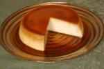
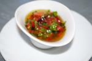

Top retete
Feluri de mancare
Ingredient
Retete dupa origine
Speciale
Altele
Top retete
Feluri de mancare
Ingredient
Retete dupa origine
Speciale
Altele

Crema de zahar ars
Clatite fine si catifelate- reteta ...

Sos chimichurri (sos argentinian p...
Ciorba de perisoare
MondoCucina.TV
Sos chimichurri (sos argentinian pt fripturi)
Pui cu ghimbir, usturoi si sos japonez Tonkatsu
Aripioare picante- Slow Food
Musaca dietetica cu cartofi, dovlecei si carne de vita
Dorada la cuptor cu sos picant de rosii
Mere in aluat de pancakes
Ananas in aluat de clatite
Somon picant cu parfum de portocale si quinoa
Pulpe de iepure cu sos de portocale si rozmarin
Salata exotica
Paste cu creveti si sos de rosii
Pulpe de pui la cuptor cu legume natur
Retete
Retete africane
Retete americane
Retete argentiniene
Retete asiatice
Retete australiene
Retete austriece
Retete braziliene
Retete caraibiene
Retete chinezesti
Retete cipriote
Retete egiptene
Retete elvetiene
Retete evreiesti (israeliene)
Retete exotice
Retete frantuzesti
Retete germane
Retete grecesti
Retete indiene
Retete Insulele Reunion
Retete italiene
Retete libaneze
Retete macedonesti
Retete marocane
Retete mexicane
Retete olandeze
Retete orientale
Retete pakistaneze
Retete portugheze
Retete romanesti
Retete rusesti
Retete sarbesti
Retete spaniole
Retete thailandeze
Retete tunisiene
Retete turcesti
Retete unguresti
Aperitive
Clatite
Deserturi
Feluri principale
Garnituri
Paste
Retete craciun
Retete de post
Retete la cuptor
Retete vegetariene
Salate
Sosuri
Supe si ciorbe
Ficatei
Retete ardei
Retete avocado
Retete banane
Retete capsuni
Retete carne tocata
Retete cartofi
Retete cu fructe
Retete curcan
Retete de iepure
Retete de porc
Retete dovlecei
Retete fructe de mare
Retete goji
Retete kiwi
Retete miel
Retete orez
Retete peste
Retete pui
Retete rata
Retete rosii
Retete vinete
Retete vita
Cocteiluri
Retete dieta Montignac
Retete dieta South Beach